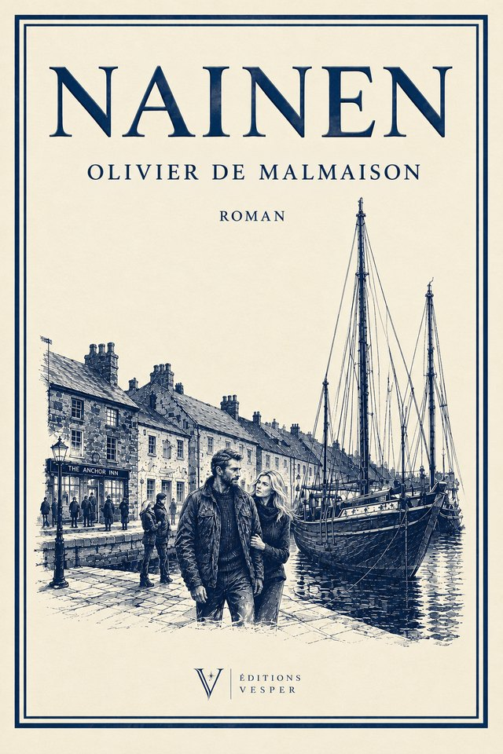

Roman
Nainen
Il se fait appeler Marc. Elle ne donne pas son nom. Chacun a une histoire bien rodée, et des semaines de navigation pour la tenir. Entre le Solent et les îles du Nord, un huis clos à deux sur le teck et l'acajou d'un vieux ketch, où chaque vérité partagée est un pas de plus vers ce qu'aucun des deux ne veut découvrir.
À paraître
Éditions Vesper